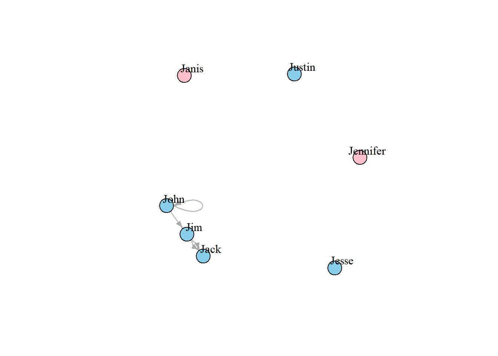
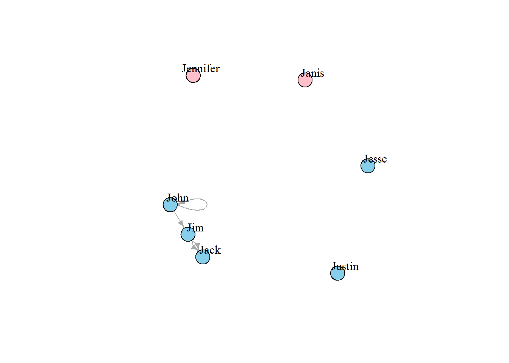

2.2 에지(Edge), 정점(vertex), 그리고 네트워크 속성(network attributes)
정점과 에지 접근 :
E(g4) # 개체 g4의 에지들## + 4/4 edges from d1032c5 (vertex names):
## [1] John->Jim Jim ->Jack Jim ->Jack John->JohnV(g4) # 개체 g4의 정점들## + 7/7 vertices, named, from d1032c5:
## [1] John Jim Jack Jesse Janis Jennifer Justin또한 네트워크 행렬(network matrix)을 직접 검토할 수 있다 :
g4[]## 7 x 7 sparse Matrix of class "dgCMatrix"
## John Jim Jack Jesse Janis Jennifer Justin
## John 1 1 . . . . .
## Jim . . 2 . . . .
## Jack . . . . . . .
## Jesse . . . . . . .
## Janis . . . . . . .
## Jennifer . . . . . . .
## Justin . . . . . . .g4[1,]## John Jim Jack Jesse Janis Jennifer Justin
## 1 1 0 0 0 0 0네트워크 속성, 정점들 그리고 에지들 추가하기 :
V(g4)$name # 네트워크 생성시 자동으로 생성됨.## [1] "John" "Jim" "Jack" "Jesse" "Janis" "Jennifer" "Justin"V(g4)$gender <- c("male", "male", "male", "male", "female", "female", "male")
E(g4)$type <- "email" # 에지의 속성 모든 에지에 "email" 할당
E(g4)$weight <- 10 # 에지의 가중치, 모든 기존 에지에 10으로 설정속성의 확인 :
edge_attr(g4) # 에지의 속성 확인## $type
## [1] "email" "email" "email" "email"
##
## $weight
## [1] 10 10 10 10vertex_attr(g4) # 정점의 속성 확인## $name
## [1] "John" "Jim" "Jack" "Jesse" "Janis" "Jennifer" "Justin"
##
## $gender
## [1] "male" "male" "male" "male" "female" "female" "male"graph_attr(g4) # 네트워크 속성 확인## named list()속성 설정 방법 (비슷하게 set_edge_attr(), set_vertex_attr(), 등을 사용) :
g4 <- set_graph_attr(g4, "name", "Email Network")
g4 <- set_graph_attr(g4, "something", "A thing")
graph_attr_names(g4)## [1] "name" "something"graph_attr(g4, "name")## [1] "Email Network"graph_attr(g4)## $name
## [1] "Email Network"
##
## $something
## [1] "A thing"g4 <- delete_graph_attr(g4, "something")
graph_attr(g4)## $name
## [1] "Email Network"plot(g4, edge.arrow.size=.5, vertex.label.color="black", vertex.label.dist=1.5,
vertex.color=c( "pink", "skyblue")[1+(V(g4)$gender=="male")] ) 
그래프 g4는 Jim에서 Jack으로 두 개의 에지를 가지고 있으며, John은 자신에게로 향하는 루프(loop)를 가지고 있다. 그래프에서 루프를 제거하고 같은 노드 사이의 복수개의 에지들을 제거하여 그래프를 단순화할 수 있다.
에지 속성들이 어떻게 결합되는지를 나타내기 위해 edge.attr.comb 을 사용한다. 가능한 옵션은 sum, mean, prod (product), min, max, first/last (첫/마지막 에지 속성 선택) 등을 포함한다. “type = ignore” 옵션은 속성이 무시되거나 제거되어야 함을 의미한다.
g4s <- simplify( g4, remove.multiple = T, remove.loops = F,
edge.attr.comb=c(weight="sum", type="ignore") )
plot(g4s, vertex.label.dist=1.5)
g4s## IGRAPH d22669a DNW- 7 3 -- Email Network
## + attr: name (g/c), name (v/c), gender (v/c), weight (e/n)
## + edges from d22669a (vertex names):
## [1] John->John John->Jim Jim ->Jackigraph 개체의 설명은 4 가지 글자로 시작한다.
D또는U: 방향성 또는 무방향성 그래프N: 명명된 그래프(노드가name속성을 가짐)W: 가중 그래프(에지들이weight속성을 가짐)B: 이분할 (bipartite; two-mode) 그래프(노드들이type속성을 가짐)
그래프에서 (7 5) 와 같은 두 숫자는 노드와 에지의 수를 의미한다. 설명은 또한 노드와 에지의 속성을 나열한다. 예를 들어,
(g/c)- 그래프 수준의 문자 속성(v/c)- 정점 수준의 문자 속성(e/n)- 에지 수준의 숫자 속성